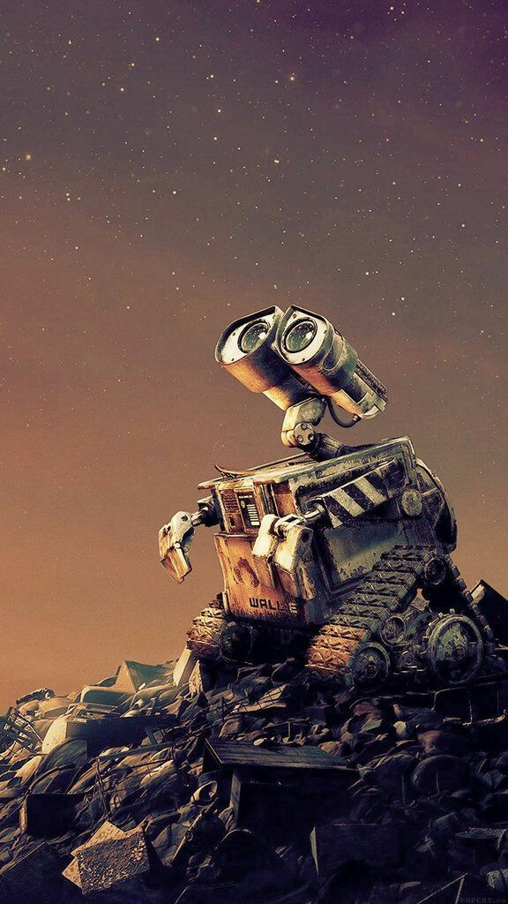

WALL-E es un robot encargado de recolectar y comprimir la basura que hay en la tierra. Su nombre proviene del ingles que significa Robot de Distribucion y Cargador de Basura de la Tierra. El es el protagonista de la pelicula del mismo nombre la histroria cuenta que en 2110 los niveles de contaminacion en el planeta llegaron a un nivel critico, donde la tierra ya no podia sustentar vida es por esta razon que los seres humanos se van del planeta a brdo de gigantescas naves espaciles. Al dejar el planeta los humanos dejan millones de robots wall-e junto con gigantescas maquinas llamadas insineradores para que asi ellos se encargquen de limpiar el planeta. Desafortunadamente despues de largos años todos os robots con excepcion de uno dejaron de funcionar. El ultimo robot wall-e con la serie 6275 sigue trabajando duro sin saber que su trabajo ya no tiene sentido. Durante este tiempo se hace amigo de una cucaracha que llama Hal. Mientras sigue obedeciendo su programacion de recolectar basura el llega a desarrollar curiosidad por eso empieza a rrecolectar algunas baratijas y cachibaches los cuales le facinan.
© Copyright Alex
© Copyright Alex